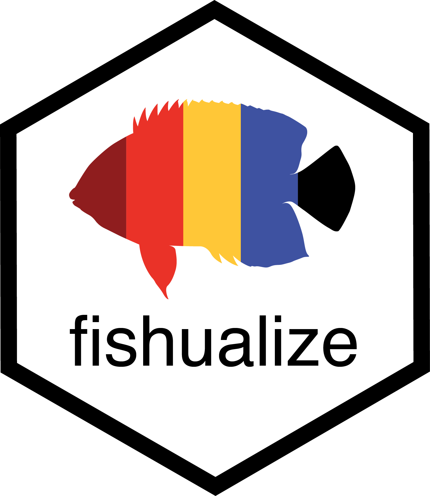
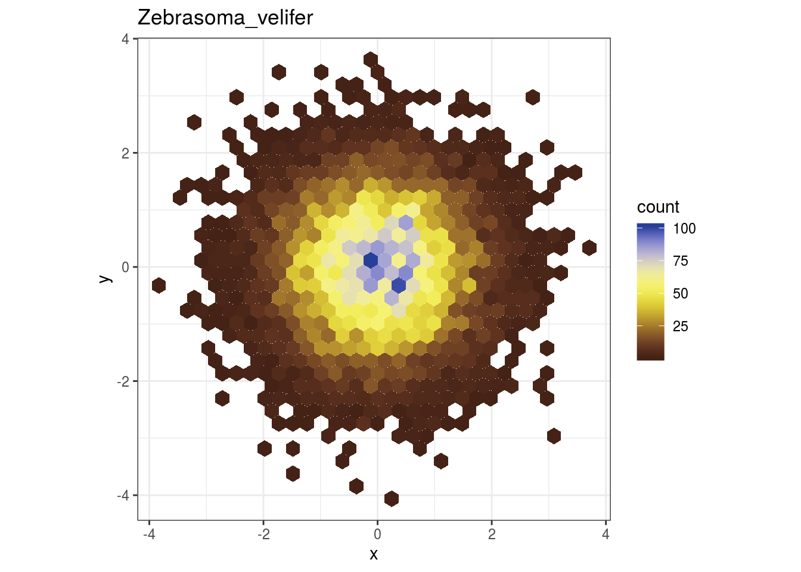
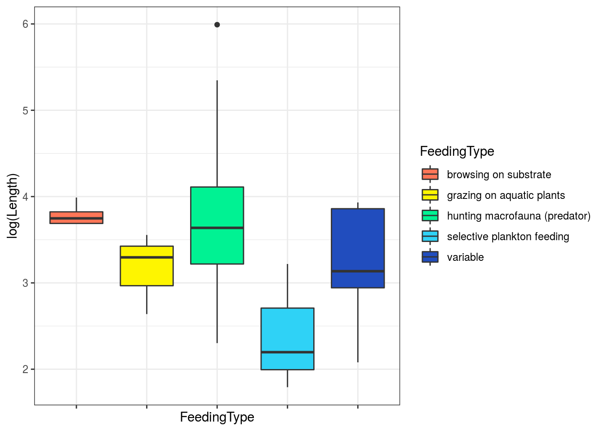
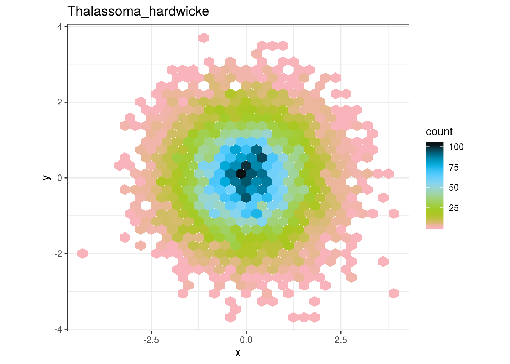
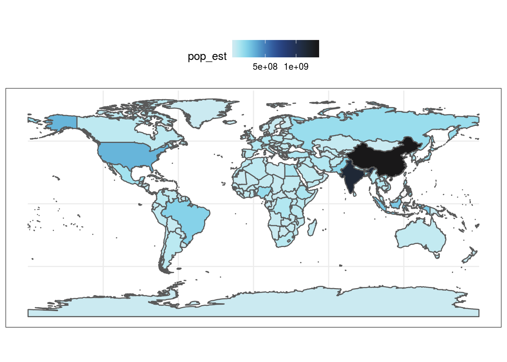
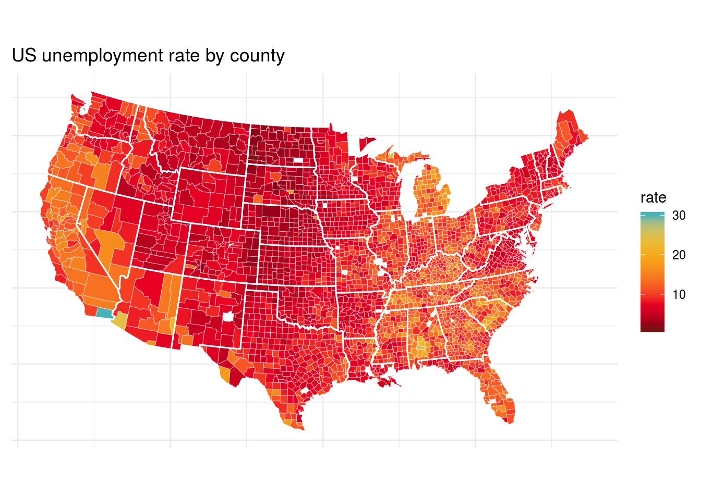
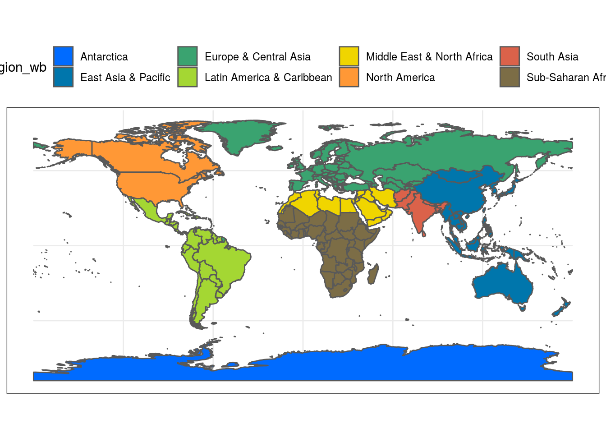
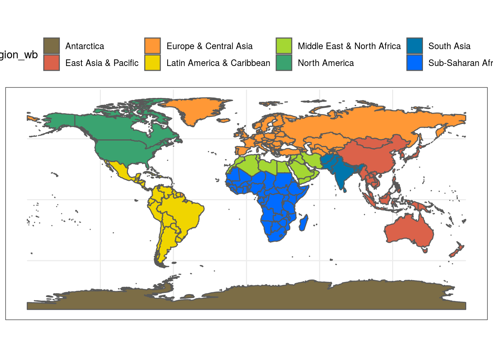
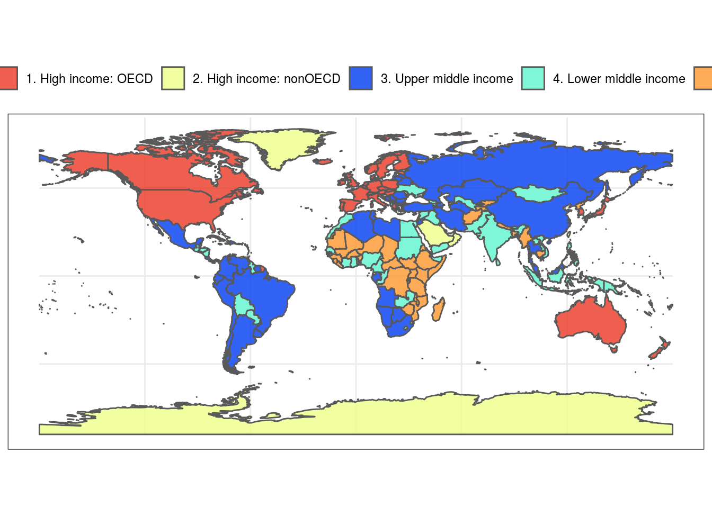
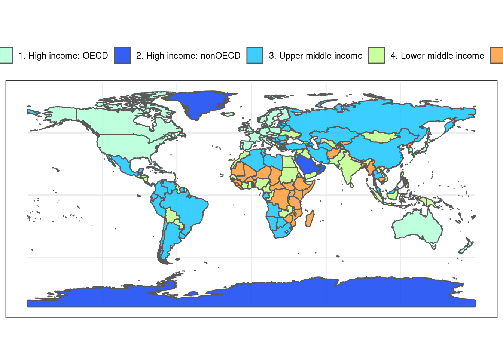

[
[


The fishualize package provides color scales for plotting in R based on nature’s most stunning and colorful organisms: teleost fishes (with a few chondrichthyan cameos). #TeamFish in its colorful glory.
The color scales
The package contains one scale per species, defined by five dominant colors. The number of fishualized species will expand over time. For a list of fish species that are currently available, run fish_palettes().
A visual overview of the color scales can be found here.
To visualize a fish color palette, you can run fishualize() and specify your choice.


Usage
The fish() function produces the fish color scale based on your favorite species, which can be specified using ‘option’ = “Your_favorite” or fish_palettes()[] with the number of your species specified.
For base R plots, use the fish() function to generate a palette:


ggplot2
The package also contains color scale functions for ggplot2 plots: scale_color_fish() and scale_fill_fish().
library(ggplot2)
library(rfishbase)
# load data for plotting
# 1. Create list of species names currently featured in fishualize
spp <- fishualize::fish_palettes()
# 2. Get data on the included species from FishBase using the rfishbase package
dt <- rfishbase::species(gsub("_"," ", spp))
dt$Importance = factor(dt$Importance, levels = c("highly commercial", "commercial", "minor commercial", "subsistence fisheries", "of no interest"))
# plot bars with discrete colors using color scheme provided by Scarus quoyi
ggplot(dt[!is.na(dt$Importance),]) +
geom_bar(aes(x = Importance, fill = Importance)) +
scale_fill_fish_d(option = "Scarus_quoyi") +
theme_bw() +
theme(axis.text.x= element_blank() )
# plot points with continuous colors provided by Hypsypops rubicundus
ggplot(dt) +
geom_point(aes(x = Length, y = Vulnerability, color = Vulnerability), size = 3) +
scale_color_fish(option = "Hypsypops_rubicundus", direction = -1) +
theme_bw()## Warning: Removed 1 rows containing missing values (geom_point).
# get ecological information from FishBase
data <- rfishbase::ecology(gsub("_"," ", spp), c("SpecCode","FeedingType", "DietTroph")) %>%
dplyr::left_join( rfishbase::species(gsub("_"," ", spp)))
# plot boxplots of length across feeding groups using discrete colors provided by Cirrilabrus solorensis
ggplot(data[!is.na(data$FeedingType),]) +
geom_boxplot(aes(x = FeedingType, y = log(Length), fill = FeedingType )) +
scale_fill_fish_d(option = "Cirrhilabrus_solorensis", labels = c("invertivore", "herbivore", "carnivore", "planktivore", "omnivore")) +
theme_bw() +
theme(axis.text.x= element_blank() )
# examine relationships between size and trophic level with vulnerability as a continuous color scheme provided by Lepomis megalotis
ggplot(data) +
geom_point(aes(x = Length, y = DietTroph, color = Vulnerability), size = 6, alpha = 0.9) +
scale_color_fish(option = "Lepomis_megalotis", direction = -1) +
theme_bw()## Warning: Removed 48 rows containing missing values (geom_point).
Colors can also be used with maps. Here are several examples of discrete and continuous color schemes on a world-map.
library(ggplot2)
#get dataset of the world's countries
world <- rnaturalearth::ne_countries(scale = "medium", returnclass = "sf")
#plot worldmap with each country's estimated population as a continuous colors scale based on the reverse colors of Whitley's Boxfish Ostracion whitleyi
ggplot(data = world) +
geom_sf(aes(fill = pop_est)) +
scale_fill_fish(option = "Ostracion_whitleyi", direction = -1) +
theme_bw() +
theme(legend.position = "top")
#plot worldmap with each country's estimated gdp based on the colors of the Sailfin Tang Zebrasoma velifer
ggplot(data = world) +
geom_sf(aes(fill = gdp_md_est)) +
scale_fill_fish(option = "Zebrasoma_velifer", trans = "sqrt") +
theme_bw()+
theme(legend.position = "top")
#same example as above but starting at a lighter point of the color scale
ggplot(data = world) +
geom_sf(aes(fill = gdp_md_est)) +
scale_fill_fish(option = "Zebrasoma_velifer", trans = "sqrt", begin = 0.3, end = 1) +
theme_bw()+
theme(legend.position = "top")
#plot worldmap again, this time with countries colored by their respective regional affiliation using the colors of the Clown coris *Coris gaimard* and 'discrete = TRUE'
ggplot(data = world) +
geom_sf(aes(fill = region_wb)) +
scale_fill_fish(option = "Coris_gaimard", discrete = TRUE) +
theme_bw()+
theme(legend.position = "top")
##same map with colors reversed
ggplot(data = world) +
geom_sf(aes(fill = region_wb)) +
scale_fill_fish(option = "Coris_gaimard", discrete = TRUE, direction = -1) +
theme_bw()+
theme(legend.position = "top")
#another map with countries colored by economic status using the colors of the Mandarinfish *Synchiropus splendidus*
ggplot(data = world) +
geom_sf(aes(fill = income_grp)) +
scale_fill_fish(option = "Synchiropus_splendidus", discrete = T, alpha = 0.8) +
theme_bw()+
theme(legend.position = "top")
#same map as above but with a narrower color palette in discrete values
ggplot(data = world) +
geom_sf(aes(fill = income_grp)) +
scale_fill_fish(option = "Synchiropus_splendidus", discrete = T, alpha = 0.8, begin = 0.3, end = 1) +
theme_bw()+
theme(legend.position = "top")
Contribute
Love it? Missing your favorite species? Check out how you can contribute to this package here
Acknowledgements
Thanks to everyone contributing to the color palettes: Jindra Lacko, Andrew Steinkruger, Adam Smith.
Credits
Credits for the initial structure of the functions for this package go to the harrypotter package made by Alejandro Jiménez: https://github.com/aljrico/harrypotter